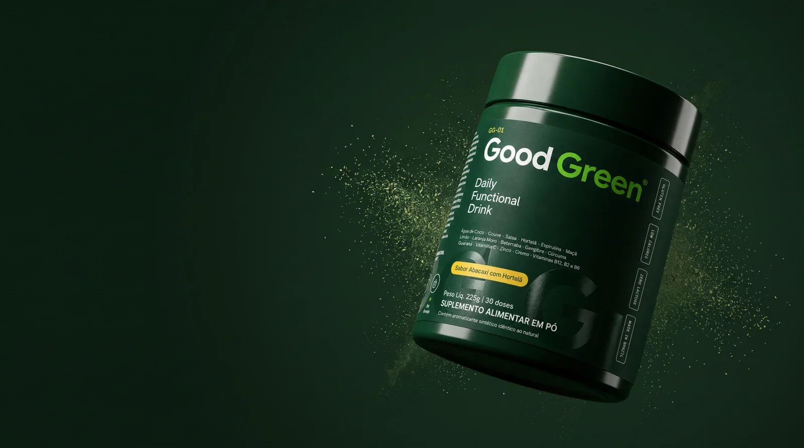
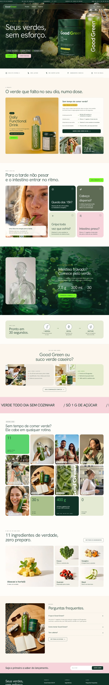
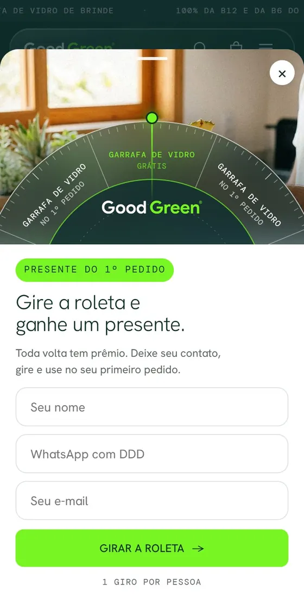
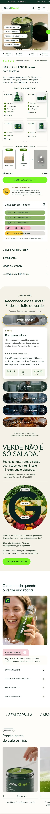
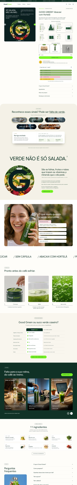
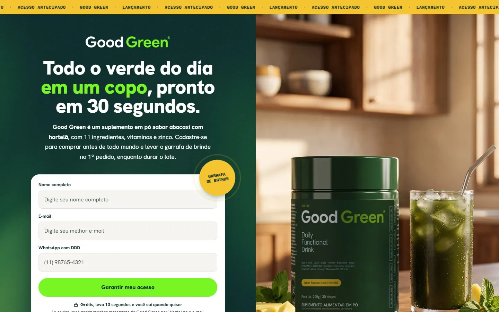
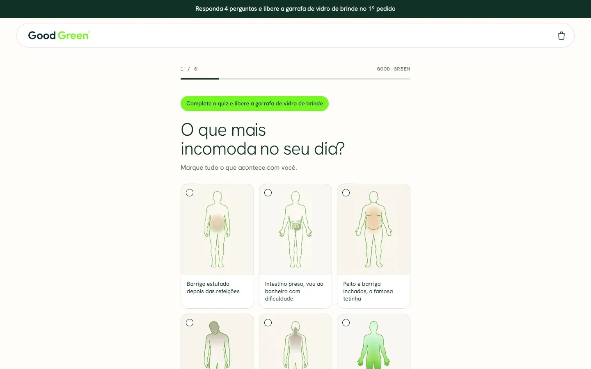
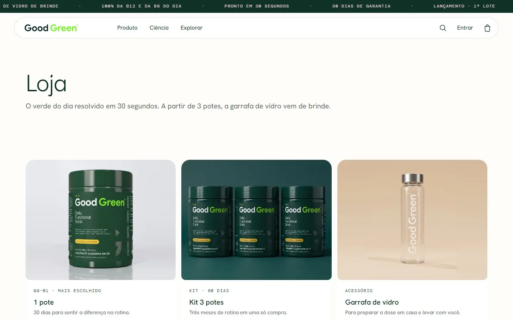

Good
Green
Site completo e jornada de lançamento de uma marca nova de bebida verde em pó.
Uma categoria nova
para o Brasil.
Good Green é um suplemento em pó que vira bebida verde: uma medida em 300 ml de água. A categoria já é grande lá fora e pouca gente aqui conhece.
O site precisava fazer duas coisas ao mesmo tempo: explicar o produto para quem nunca ouviu falar dele e parecer gostoso antes de parecer saudável.
A bebida tem que parecer gostosa antes de parecer saudável. O copo gelado vem antes da tabela.
O quiz mostra só as dores que a pessoa marcou, a causa e um dado com fonte. A Good Green entra depois, como solução.
Cada tela nasce no Figma, em desktop e celular, e só depois vira página. Site e Figma andam iguais.
A home, do topo ao rodapé.
A página fica presa aqui enquanto você rola. Ela começa no topo e desce junto com a sua rolagem.


A bebida tem que parecer gostosa antes de parecer saudável.
O quiz monta
o diagnóstico.
São quatro perguntas seguidas, sem tela educativa no meio.
O pop-up da roleta e o carrinho seguem a mesma linguagem: vidro, foto real e pouco texto.
- 1Quatro perguntasUma atrás da outra, sem interrupção.
- 2Só as dores marcadasO resultado mostra o que a pessoa respondeu, com a causa de cada dor.
- 3Um dado com fonteCada dor vem com um número real, sem citar a marca.
- 4O produto no fimA Good Green só aparece depois, como solução.





A página de produto.
A mesma estrutura da página de lançamento, sem a campanha.

Antes de a loja abrir,
a marca precisa de lista.
Desenhei as páginas de entrada do pré-lançamento: captação para o grupo, calculadora de fibras e as páginas de apoio do site.





